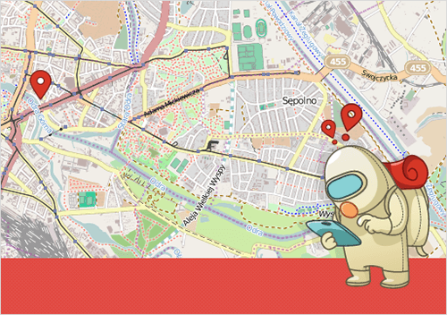
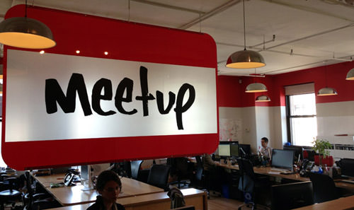
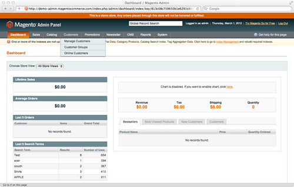
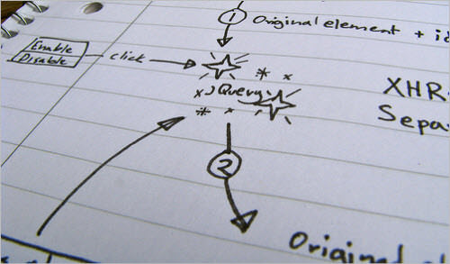
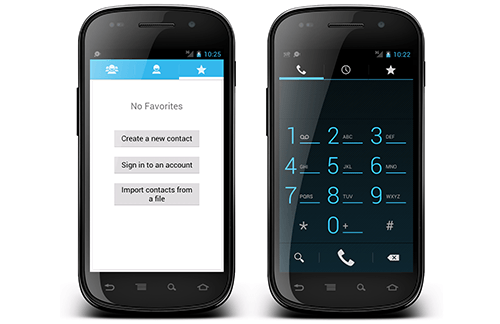
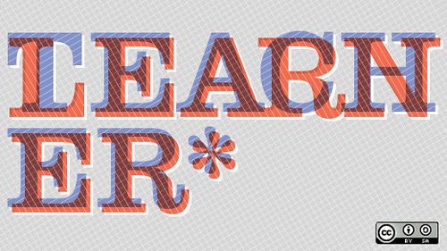

2013 has come and gone, delighting us with a plethora of inspirational, educational and fun conferences. You should start planning 2014 right now to make sure that you don't miss your chance to get away from your desk and meet some brilliant minds and peers — face to face!

In this roundup of conferences, we are happy to present you all of the upcoming Web-related conferences, starting from January. This might be just the time to get a ticket to conferences in warmer climes! For now, we've included conferences up to June, so make sure you don’t miss your favorite one.
Read more...
Workaholism is often confused with hard work. Some people who work on the Web seem not only to disregard its dangers, but to actively promote it. They see it as a badge of honor—but is it really? On the contrary, it’s a serious issue that can damage Web teams.
Before we get started, let’s make one thing clear: A "workaholic" is someone who is addicted to work, someone who is out of balance and out of control. Their addiction can make them work for 12, 14 or even more hours a day, every day. No weekends, no vacations, just work. Soon, they neglect their family, friends, health, sometimes damaging them all irrevocably.
Read more...
Welcome to another interview in the “How I Work” series. These interviews reveal how leading thinkers and creators on the Web design, code and create. The goal is not to get into the nuances of their craft (that information exists elsewhere online), but rather to step back and learn a bit about their habits, philosophies and workflow for producing great work.

This time, we’re speaking with Andres Glusman, of Meetup, a company that uses the efficiency of the Internet to conveniently connect people offline. Andres works as the VP of Strategy, Product and Community in Meetup’s New York City office. In this piece, he shares with us how the company uses User Experience (UX), Lean Startup methods and innovative ways of organizing interdisciplinary teams to fuel the company’s consistent growth.
Read more...
The value you bring to any project as a designer or user experience professional isn’t only your ability to execute a series of tasks. Good clients will recognize and appreciate the guidance, recommendations and opinions that come with your experience.
It’s up to you to be forthcoming and to position yourself as a valuable thinker from the start. It’s also up to you to base your recommendations on more than subjective opinion. This is especially true in the rapidly evolving world of mobile, where clients typically require as much education as they do execution.
Read more...
In this tutorial, we will use Magento’s powerful shipping-method code abstraction to create a shipping carrier. We will create two shipping methods that provide a fixed shipping price, allow for free shipping promotions, define logic based on an item’s weight and, finally, make it all configurable in the admin panel.

This tutorial assumes that you are familiar with how to create a Magento module. If you are not, please first refer to an earlier tutorial in this series, “The Basics of Creating a Magento Module.” To begin, you will need a Community or Enterprise installation of Magento, either locally or on a server that you are able to access.
Read more...
The Web is awash in content. A recent Moz article reports that 92,000 new articles are posted online every day. Companies are spending billions on content marketing to enhance credibility, build brand awareness and, especially of late, improve SEO.
Google has always tried to reward great content with high rankings, but today, thanks to vast improvements in its algorithm, Google is better able to actually do it. Its content quality guidelines are perfectly aligned with what every writer and marketer should aspire to.
Read more...
At present, jQuery is the de facto library for working with the document object model (DOM). It can be used with popular client-side MV* frameworks (such as Backbone), and it has a ton of plugins and a very large community.

As developers’ interest in JavaScript increases by the minute, a lot of people are becoming curious about how native APIs really work and about when we can just use them instead of including an extra library. Lately, I have started to see more and more problems with jQuery, at least my use of it.
Read more...
This article is the second in a series of four articles covering four ways to develop mobile applications. The last article covered how to accomplish this using native iOS development tools. In this article, we’ll look at how to build the same sort of application using native Android tools.

We’ve been building a simple tip calculator. As with the iOS application, this one contains two screens: a main view and a settings view. The settings view persists the default tip percentage to local storage using Android’s SDK support.
Read more...
Just over four years ago, I decided to take a part-time position teaching website design and front-end development at a local university, the University of Rhode Island. My time in the classroom has been one of the most challenging as well as one of the most rewarding experiences in my career, and I believe that other Web professionals would greatly benefit from spending some time in an educational setting teaching others their craft.

In this article, we will look at some of the challenges to prepare for if you are considering taking on a teaching position. I will also present some of my personal experiences and insights, including the benefits and rewards I’ve enjoyed as a teacher, to help you consider such a move for your own career.
Read more...